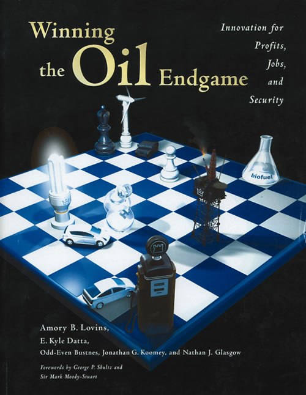

Amory Lovins is the most influential, and certainly the most prolific, energy thinker of this generation. He has written with insight and erudition about numerous topics, including nuclear power, hydrogen, advanced car design, global warming and the vulnerability of the U.S. energy network to terrorists (in 1984!). His newest book, Winning the Oil Endgame, is a road map for change toward oil independence.
This is not beach reading unless you are a serious energy geek. But if you are interested in our future energy options, Winning the Oil Endgame is a gold mine. Lovins and his staff at Rocky Mountain Institute (RMI) have done serious legwork to tease out the technical details and policy requirements for a transition away from petroleum fuel.
Not everyone, nor even everyone green, will agree with all of Lovins’ recommendations. However, it is difficult not to be impressed with the book’s marriage of technical detail and ingenious vision. For example, over the years I have had numerous conversations with executives in the airline industry about their plans for a post-petroleum future.
Footnote 916 of Winning the Oil Endgame offers more vision and more clever ideas than all those conversations combined.
This is but one example of the earmarks of a Lovins manuscript. Winning the Oil Endgame sports 982 footnotes and 20 dense pages of references, including 30 of Lovins’ prior publications.
Another Lovins trademark is the assortment of interesting factoids buried here and there, as rewards for people who slog through the dense prose. For example, he explains that the average automobile costs less per pound than a McDonald’s hamburger - that may be obvious when you think about it, but I hadn’t.
For an arsenal of ammunition in support of the idea that a successful transition from oil can be swiftly accomplished, go to www.oilendgame.com, where you can buy the book for $40. Those who wish to save paper, money or both, can instead download the manuscript directly from the Web page. If you do this, please consider sending the nonprofit RMI a donation to help with its educational efforts.
|
“Winning the Oil Endgame” presents a plan to transition away from petroleum fuel. |
 “Winning the Oil Endgame: Innovation for Profits, Jobs, and Security” by Amory B. Lovins, E. Kyle Datta, Odd-Even Bustnes, Jonathan G. Koomey and Nathan J. Glasgow (Rocky Mountain Institute, 2004). |
|